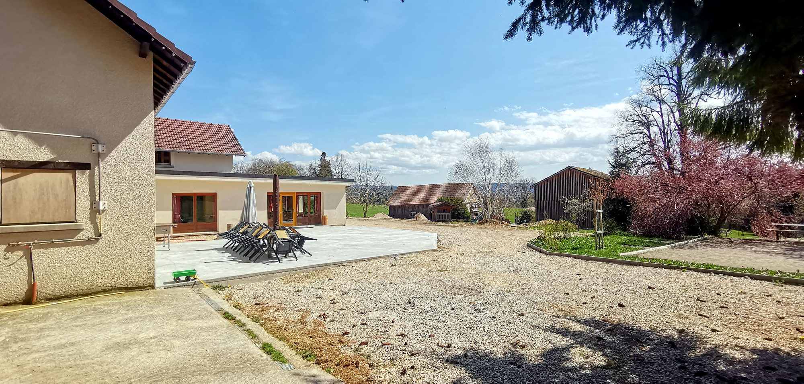

Les gîtes
- 22 + 2 pers.La Cavalière
- 21 + 6 pers.Le Tilleul
- 43 + 8 pers.Le domaine entier
Choisissez votre gîte
Louez La Cavalière, Le Tilleul ou privatisez l’ensemble du domaine. Chaque gîte a sa page : ses chambres, ses photos et ses disponibilités. Le premier chiffre compte les lits, le second les couchages d’appoint.


La Cavalière ou Le Tilleul ?
Les deux gîtes sont différents. Voici ce qui les distingue.
 22 + 2 pers.
22 + 2 pers.
La Cavalière
Pour les grandes tablées et les fêtes- Grande salle de 60 places, qui sert aussi de salle de conférence
- 4 chambres, chacune avec sa salle de bain
- Dortoirs de 6 et de 12 places
- Une grande terrasse et le barbecue
 21 + 6 pers.
21 + 6 pers.
Le Tilleul
Pour les familles qui veulent du confort- 7 chambres, dont un dortoir, chacune avec sa salle de bain
- Chambre PMR au rez-de-chaussée
- Le billard, le baby-foot et la bibliothèque
- Une salle à manger de 40 places et un lave-vaisselle
Vous êtes plus de 27 ? Privatisez le domaine entier : 43 couchages et 8 d’appoint.
Comment se passe la location
Les prix et les disponibilités s’affichent en direct sur la page Disponibilités et réservation.
Les règles de location
- Le week-end se loue uniquement en forfait 2 nuits, du vendredi au dimanche
- Les nuits en semaine se louent du lundi au jeudi
- Vous louez un gîte entier, quel que soit le nombre de personnes
- Ménage de fin de séjour en option : 230 € par gîte
Compris dans le prix
- La taxe de séjour, l’eau, l’électricité et le chauffage
- Les draps, la literie et le linge de bain
- Le gel douche, le shampooing et le papier toilette
- Les produits ménagers, la vaisselle et le matériel de cuisine
- Le Wi-Fi, les lits parapluie, la chaise haute et le parking
Bon à savoir
Peut-on louer un seul gîte ?
Oui, vous pouvez louer uniquement La Cavalière (22 couchages et 2 d’appoint) ou Le Tilleul (21 couchages et 6 d’appoint). Contactez-nous pour un devis adapté.
Comment fonctionne la gestion libre ?
Chaque gîte a sa cuisine équipée : plaques de cuisson, four, micro-ondes, réfrigérateur, congélateur, vaisselle et ustensiles, lave-vaisselle au Tilleul. Vous êtes totalement autonomes pour vos repas.
Peut-on faire venir un traiteur ?
Absolument. Vous êtes libres de faire appel au traiteur de votre choix. Nous pouvons aussi vous orienter vers des traiteurs locaux qui livrent directement au gîte.
Les animaux sont-ils acceptés ?
Oui, vos animaux de compagnie sont les bienvenus dans les deux gîtes.
Devons-nous faire le ménage en partant ?
Le ménage de fin de séjour est en option (230 € par gîte). Si vous ne le choisissez pas, le gîte doit être rendu propre et rangé, avec les produits ménagers fournis : ils protègent la nature autour du gîte et la fosse toutes eaux.
Y a-t-il une caution à verser ?
Les conditions de réservation (acompte, caution) vous sont communiquées lors de votre demande de réservation.
Y a-t-il un parking ?
Oui, une grande place devant le gîte permet de stationner facilement, y compris avec des vans et des camionnettes.

Choisissez vos dates
Dites-nous combien vous êtes et quel gîte vous tente : Carole vous répond sous 24 à 48 h.
Demander vos dates